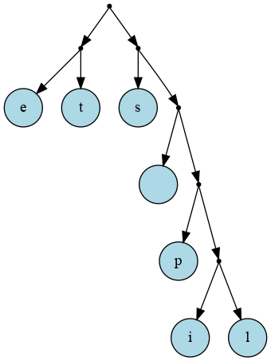

C19 Algorithmes des textes ¶
"An algorithm must be seen to be believed, and the best way to learn what an algorithm is all about is to try it.
"
(The Art of Computer Programming Vol. 1, 3rd edition)
Cours¶
Attention
Ce diaporama ne vous donne que quelques points de repères lors de vos révisions. Il devrait être complété par la relecture attentive de vos propres notes de cours et par une révision approfondie des exercices.
Travaux dirig√©s¶
Travaux pratiques¶
Danger
-
Afin de tester les divers algorithmes sur les textes, on suppose dans tous les exercices qu'on dispose d'un fichier texte encodé au format ascii standard c'est-à-dire qu'on utilise 128 cractères tous encodés sur 8 bits. De cette façon :
- pour les algorithmes de recherche on pourra indexer chaque caractère par une table de 128 entiers (c'est-à-dire identifier un caractère à son code ascii.
- pour mesurer les taux de compressions, on pourra considérer qu'un fichier contenant \(n\) caractères a une taille de \(8n\) bits (le cas de l'utf-8 s'avère bien plus problématique puis qu'un caractère occupe de 1 à 4 octets.)
-
On donne ci dessous un tel fichier prêt à l'emploi à télécharger : il s'agit du livre Notre-Dame de Paris (V. Hugo, 1831) qui servira d'exemple pour les tests.
Notre-Dame de Paris (ascii) - Pour produire de tels fichiers, on pourra partir de n'importe quel fichier texte au format utf-8 (par exemple un livre téléchargeable sur le site du projet Gutenberg) puis convertir ce fichier au format ascii en effectuant une translittération, c'est-à-dire par exemple en remplaçant
àparaou encoreéparepour cela, on pourra utiliser l'utilitaireiconven ligne de commande avec la syntaxe suivante :
Aide
En Ocaml la fonction suivante lire_fichier string -> string permet de lire la totalité d'un fichier dont on donne le nom et renvoie le contenu sous la forme d'une chaine de caractère :
 Exercice 1 : Autour de la recherche na√Øve¶
Exercice 1 : Autour de la recherche na√Øve¶
-
En OCaml
-
Ecrire en OCaml l'algorithme de recherche naïf vu en cours et qui renvoie la liste de toutes les occurrences du motif dans la chaine
-
Tester la sortie anticipée d'une boucle à l'aide de la levée d'une exception de façon à renvoyer uniquement la première occurrence. On pourra utiliser l'exception prédéfinie
Exitou créer une exception en déclarant par exempleexception Trouve;;.
-
-
En C
-
Ecrire l'algorithme de recherche naïf qui renvoie l'indice de la première occurence (ou
-1) si le motif ne se trouve pas dans la chaine.Aide
On pourra utiliser la fonction
strncmpde<string.h>pour comparer directement le motif à n'importe quelle partie du texte. -
Ecrire une fonction qui renvoie les indices de toutes les occurrences sous la forme d'une liste chainée d'entiers (afin de revoir rapidement leur implémentation).
-
Dans les deux langages, pour tester les programmes, on pourra :
-
Ecrire une fonction qui prend en argument un nom de fichier et renvoie une chaine de caractères contenant les caractères du fichiers.
-
Tester les fonctions de recherche en écrivant un programme qui prend en argument sur la ligne de commande un motif et le nom du fichier contenant le texte.
Aide
On rappelle :
- qu'en C, la fonction
maindoit alors s'écriremain(int argc, char* argv[])et que le tableau de chaines de caractèresargvcontient les arguments présents sur la ligne de commande à partir de l'indice 1 (argv[0]est le nom de l'exécutable). - qu'en OCaml, on peut récupérer directement l'argument numéro
ià l'aide deSys.argv.(i)(comme en C, l'argument d'indice 0 est le nom de l'exécutable)
- qu'en C, la fonction
Exercice 2 : Avec une table de d√©calage¶
On rappelle qu'on peut accélérer la recherche en commençant par la fin du motif (de longueur \(l_m\)) et en utilisant une table de décalage \(d\) qui indique de combien d'emplacement on peut avancer lorsqu'on rencontre deux caractères qui ne se correspondent pas :
- Si un caractère \(c\) n'est pas dans le motif alors \(d(c)=l_m\)
- Si c est le dernier caractère du motif, alors \(d(c)\) est la distance entre l'avant-dernière occurrence de \(c\) et la fin du motif
- Sinon \(d(c)\) est la distance entre la dernière occurrence de \(c\) et la fin du motif
Dans une recherche naïve on teste les correspondances à chaque indice possible dans le texte, cette table de décalage permet d'avancer plus vite (au maximum on avance de la longueur du motif).
- Ecrire la table de décalage du motif
petite - Ecrire dans le langage de votre choix une fonction
decalagequi prend en argument un motif et renvoie sa table de décalage. On rappelle qu'on utilise 128 caractères, on connait donc à l'avance la taille de la table de décalage. Tester votre fonction sur le motifpetite - Implémenter l'algorithme de recherche de Boyer-Moore-Hoorspool
-
On propose de comparer le nombre de comparaisons effectués par la recherche naïve et par l'algorithme de Boyer-Moore-Hoorspool :
- Modifier votre algorithme de recherche naïve afin qu'il renvoie aussi le nombre de comparaisons effectués (dans le cas du C, on pourra passer un pointeur vers un entier en argument et le modifier dès qu'une comparaison est faite)
- Modifier de même votre implémentation de Boyer-Moore-Hoorspool afin d'obtenir le nombre de comparaisons effectués.
- Conclure en testant par exemple sur la recherche de
Quasimododans le fichiernotredame_ascii.txttéléchargeable ci-dessus.
Exercice 3 : Algorithme de Rabin-Karp¶
-
Ecrire dans le langage de votre choix, une implémentation de l'algorithme de Rabin-Karp en utilisant la fonction de décalage qui effectue la somme des codes des caractères.
-
Modifier votre fonction afin de pouvoir obtenir en plus le nombre de collisions
-
Tester en recherchant
abdans le fichiernotredame_ascii.txt, combien de collisions ne sont pas des correspondances ?
-
Tester avec la nouvelle fonction de hachage
\(\displaystyle{h(s) = \sum_{i=0}^{n-1} 31^i \times c_i}\) (où les \(c_i\) sont les caractères de la chaine \(s\))
Exercice 4 : Algorithme de Huffmann en OCaml¶
Aide
On rappelle que lors de la phase de construction de l'arbre, on sélectionne à chaque étape les deux arbres ayant les nombres d'occurrences les plus faibles. La structure de données adaptée est donc celle d'une file de priorité puisqu'elle permet la mise à jour de la structure de données en complexité logarithmique. Cette structure de données s'implémente usuellement à l'aide d'un tas min binaire. Une implémentation de cette structure de donnée en OCaml est donnée ci-dessous. Cependant, on pourra aussi utiliser une simple liste dans laquelle on recherchera à chaque étape les éléments de plus petites priorités (ou coder sa propre implémentation). L'interface fournie est la suivante :
let cree_file t defaultcrée une file de priorité de taille maximaletd'éléments de type de celui dedefault. Par exemplelet test = cree_file 10 ""crée une file de priorité de taille 10 contenant des chaines de caractères.let enfile elt fpenfile l'élémentelt(représenté par un couplepriorite,valeur) dans la file de priorité  fp. Par exempleenfile (2,"Albert") testajoute "Albert" avec la priorité 2 dans la filetest.let defile fprenvoie l'élement de plus petite priorité (sous la forme d'un couplepriorite,valeur)let taille fprenvoie le nombre d'élements de la filefp
Implémentation d'une file de priorité
type 'a file_priorite = {
mutable taille : int;
donnees : (int*'a) array};;
type abh =
| Feuille of char
| Noeud of abh*abh;;
let nbchar = 128;;
let fils i = 2 * i + 1;;
let parent i = (i-1)/2 ;;
let cree_file t default= {taille = 0; donnees = Array.make t (0,default)};;
let cmp_prio elt1 elt2 =
let p1 = fst elt1 in
let p2 = fst elt2 in
p1 < p2;;
let taille fp = fp.taille;;
let swap tab i j =
let temp = tab.(i) in
tab.(i) <- tab.(j);
tab.(j) <- temp;;
exception File_pleine;;
exception File_vide;;
let enfile elt fp =
if fp.taille = Array.length fp.donnees then raise File_pleine else
(let cp = ref fp.taille in
fp.taille <- fp.taille + 1;
fp.donnees.(!cp) <- elt;
while (!cp <>0 && cmp_prio fp.donnees.(!cp) fp.donnees.(parent !cp)) do
(
swap fp.donnees !cp (parent !cp);
cp := parent !cp;
)
done;
);;
let defile fp =
if fp.taille = 0 then raise File_vide else
(
let res = fp.donnees.(0) in
swap fp.donnees 0 (fp.taille-1);
fp.taille <- fp.taille-1;
let cp = ref 0 in
let lc = ref (fils !cp) in
(*Tant qu'il y a deux fils et que l'un est inférieur on échange*)
while (!lc+1 < fp.taille && (cmp_prio fp.donnees.(!lc) fp.donnees.(!cp) || cmp_prio fp.donnees.(!lc+1) fp.donnees.(!cp))) do
if (cmp_prio fp.donnees.(!lc) fp.donnees.(!lc+1)) then
(swap fp.donnees !cp !lc;
cp := !lc)
else
(swap fp.donnees !cp (!lc+1);
cp := !lc+1);
lc := fils !cp ;
done;
(*Il reste au plus un fils, on compare et on échange le cas échéant*)
if (!lc<fp.taille && cmp_prio fp.donnees.(!lc) fp.donnees.(!cp)) then swap fp.donnees !cp !lc;
res;
)
;;
Dans tout la suite on suppose qu'on veut compresser un texte encodé en ascii et on suppose défini let nbchar = 128.
-
Ecrire une fonction
occurences : string -> int arrayqui prend en argument une chaine de caractèrestexteet renvoie un tableau d'entierocctel queocc.(i)contienne le nombre d'occurrence du caractère de codeidanstexte(on rappelle qu'on considère que les codes des caractères sont ceux de l'ascii) et donc vont de 0 à 127. -
On définit à présent le type :
qui permet de représenter un arbre de codage de Huffman, car c'est soit une feuille (avec le code du caractère) soit un noeud constitué d'un sous arbre droit et d'un sous arbre gauche. Ecrire une fonctionlet initialise_file int array -> abh file prioritequi prend en argument un tableau de taille 128 tel quetab.(i)contienne le nombre d'occurrence du caractèreiet renvoie une file de priorité dans laquelle on a enfilé toutes lesFeuilles (char_of_int i)pouri=0...128en leur donnant comme priorité le nombre d'occurrence du caractère de codei(si ce nombre d'occurrence est non nul) -
Ecrire une fonction
construire_arbre abh file_priorite -> abhqui prend en argument un tableau d'occurrence et construit l'arbre de codage de Huffmann correspondant.Aide
On rapelle que l'algorithme consiste, tant que la file de priorité n'est pas réduit à un seul élément, à extraire les deux ayant la plus grande priorité, les assembler en un nouvel arbre enfiler ce nouvel arbre en lui donnant la somme des priorités des deux éléments extraits.
-
Ecrire une fonction
huffmann string -> abhqui prend en argument une chaine de caractères et renvoie l'arbre de codage de huffman de cette chaine de caractères.Note
Une fonction de visualisation
abh -> unitest fournie ci-dessous et vous permet de visualiser l'arbre construit :Visualisation d'un arbre de codage de Huffman
let visualise arbre = let num = ref 0 in let outc = open_out "temp.gv" in output_string outc "digraph mygraph {\n"; let rec aux ab = let id = !num in num := !num+1; (match ab with | Feuille c -> if c='"' then Printf.fprintf outc "n%d [shape=circle, style=filled, fillcolor=lightblue, label=\"\\\"\"]\n" id else Printf.fprintf outc "n%d [shape=circle, style=filled, fillcolor=lightblue, label=\"%c\"]\n" id c; | Noeud (g,d) -> Printf.fprintf outc "n%d [shape=point, width=0.05, height=0.05]\n" id; let idg = aux g in let idd = aux d in Printf.fprintf outc "n%d -> n%d\n" id idg; Printf.fprintf outc "n%d -> n%d\n" id idd; ; ); id in ignore (aux arbre); output_string outc "}\n"; close_out outc; ignore (Sys.command "xdot temp.gv");;Par exemple, sur l'exemple du cours :
les petits tests, vous devriez obtenir l'arbre suivant :  -
Ecrire une fonction
cree_code ab -> string arrayqui prend en argument un arbre de codage de Huffmann et renvoie les codes des caractères qu'il contient (on ajoute un 0 lorsqu'on par à gauche et un 1 lorsqu'on part à droite). -
Ecrire une fonction qui calcule le taux de compression du texte. Sur l'exemple précédent vous devriez obtenir un taux de compression de \(0,328125\).
-
Ecrire une fonction
lire_fichier string -> stringqui renvoie dans une chaine de caractère le contenu du fichier dont le nom est donné en argument -
Tester l'algorithme de compression de Huffmann sur le fichier
notre_dame_ascii.txtdisponible en téléchargement ci-dessus. Quel taux de compression obtient-on (arrondir à 3 chiffres après la virgule) ?
(le séparateur décimal est .)
Exercice 5 : Algorithme de Huffmann en C¶
On veut maintenant implémenter l'algorithme de Huffman en C afin de compresser des textes encodé en ascii, on indiquera la taille du code en début de programme à l'aide d'une directive de compilation #define CODESIZE 128
-
Ecrire une fonction de signature
int *count(char *texte)qui renvoie un tableau de tailleCODESIZEcontenant le nombre d'occurrence de chaque caractère dans le texte. Puisque le texte est encodé en ascii, le tableau sera de taille 128 et la valeur situé à l'indiceiindique le nombre d'occurrences du caractère de codei.Rappel
Une conversion de type depuis un
char cvers unuint8_t ipeut s'effectuer à l'aide d'un cast :t = (uint8_t)c -
On doit maintenant définir le type représentant un arbre binaire de Huffmann :
struct node_s { unsigned char car; int prio; struct node_s *sag; struct node_s *sad; }; typedef struct node_s node; typedef node *abh;Note
On remarquera bien que :
- le champ
carn'est utilisé que pour les feuilles de l'arbre - on prévoit directement un champ
prioafin d'y stocker la priorité de l'arbre - un arbre binaire de Huffman (
abh) est un pointeur vers un noeudnode, ce qui permet de représenter l'arbre vide parNULL.
Et un type permettant de représenter un tas binaire min contenant des éléments de type
abhOn doit donc commencer par écrire les fonctions permettant d'insérer et d'extraire des éléments de ce tas.
-
Ecrire les fonctions utilitaires suivantes :
int son(int i)qui renvoie l'indice du fils gauche du noeud d'indicei.int father(int i)qui renvoie l'indice du père du noeudi.void swap(abh *data, int i, int j)qui échange les deux éléments d'indiceietjdansdata.
-
Ecrire la fonction
heap make_heap(void)qui renvoie un tas de taille vide avec un champdatapouvant contenant jusqu'àCODESIZEéléments. -
Ecrire la fonction
bool insert_heap(abh nv, heap *mh)qui insère un élémentnvdans le tasmhet renvoie un booléen indiquant si l'insertion à échoué (tas plein) ou non.Proposition de correction
-
Ecrire la fonction
abh getmin(heap *mh)qui renvoie le minimum du tas (on renvoie null si le tas est vide).Proposition de correction
abh getmin(heap *mh) { if (mh->size > 0) { abh mv = mh->data[0]; int cp = 0; int leftson = 1; mh->data[0] = mh->data[mh->size - 1]; mh->size = mh->size - 1; while (leftson + 1 < mh->size && (mh->data[leftson + 1]->prio < mh->data[cp]->prio || mh->data[leftson]->prio < mh->data[cp]->prio)) { if (mh->data[leftson]->prio < mh->data[leftson + 1]->prio) { swap(mh->data, cp, leftson); cp = leftson; } else { swap(mh->data, cp, leftson + 1); cp = leftson + 1; } leftson = son(cp); } if ((leftson < mh->size) && (mh->data[leftson]->prio < mh->data[cp]->prio)) { swap(mh->data, cp, leftson); } return mv; } return NULL; }
- le champ
-
Ecrire les fonction suivantes :
-
la fonction
heap init_heap(char *texte)qui permet d'initialiser le tas en y insérant chaque caractère contenu dans le texte avec son nombre d'occurrences, cette fonction utilise donc la fonctioncountécrite en début d'exercice. -
la fonction
abh make_huffman(heap *mh)qui génère l'arbre de huffman à partir du tas initialisé à la question précédente.Proposition de correction
La proposition de correction ajoute un identifiant unique
node_idxà chaque noeud de l'arbre qui n'est pas une feuille, cela permet d'écrire plus facilement la fonction de visualisation de l'arbre.Visualisation de l'arbre
bool is_leaf(abh g) { return (g->sag == NULL && g->sad == NULL); } void write_nodes(FILE *writer, abh g) { const char *nstyle = "[shape=point, width=0.05, height=0.05 xlabel=\"%d\"]\n"; const char *fstyle = "[shape=circle, style=filled, fillcolor=lightblue, label=\"%c\" xlabel=\"%d\"]\n"; const char *gstyle = "[shape=circle, style=filled, fillcolor=lightblue, label=\"\\\"\" xlabel=\"%d\"]\n"; if (is_leaf(g)) { fprintf(writer, "F%u ", (uint8_t)g->car); if (g->car == '"') { fprintf(writer,gstyle, g->prio); } else { fprintf(writer, fstyle, g->car, g->prio); } } else { fprintf(writer, "N%u ", (uint8_t)g->car); fprintf(writer, nstyle, g->prio); write_nodes(writer, g->sag); write_nodes(writer, g->sad); } } void make_edge(FILE *writer, node n1, node n2) { if ((uint8_t)n1.car < CODESIZE) { fprintf(writer, "F%u ->", (uint8_t)n1.car); } else { fprintf(writer, "N%d -> ", (uint8_t)n1.car); } if ((uint8_t)n2.car < CODESIZE) { fprintf(writer, "F%u\n", (uint8_t)n2.car); } else { fprintf(writer, "N%d\n", (uint8_t)n2.car); } } void write_edges(FILE *writer, abh g) { if (!is_leaf(g)) { make_edge(writer, *g, *(g->sag)); make_edge(writer, *g, *(g->sad)); write_edges(writer, g->sag); write_edges(writer, g->sad); } } void view(abh g) { FILE *writer = fopen("temp.gv", "w"); fprintf(writer, "digraph huffmann {\n"); write_nodes(writer, g); write_edges(writer, g); fprintf(writer, "}\n"); fclose(writer); system("xdot temp.gv &"); }
-
-
Tester votre fonction sur l'exemple "comprendre un algorithme et le retenir" et visualiser l'arbre obtenu. Vous devriez obtenir le résultat suivant :
-
Ecrire la fonction
char ** make_code(abh mh)qui à partir de l'arbre renvoie un tableau contenant le code de chaque caractère.Aide
On pourra utiliser les fonctions de
<string.h>telles questrlen,strcpyou encorestrcat. -
Ecrire la fonction
char *read_file(char *fname)permettant de lire le contenu d'un fichier dont on donne le nom, et tester l'algorithme sur le fichiernotredame_ascii.txt(voir exercice précédent en OCaml)
Exercice 6 : Algorithme LZW en Ocaml¶
Le but de l'exercice est d'implémenter en OCaml l'algorithme lzw, on rappelle qu'on considère qu'on compresse des textes en ascii et qu'on identifie un caractère à son code (un entier compris entre 0 et 127). On se fixe un maximum pour la taille des codes (en bits) produits par l'algorithme. Lorsque ce maximum est atteint, on ne produit plus de codes pour les prefixes rencontrés.
-
Définir en début de programme une constante
taille_max, qui contiendra la taille maximale en bits d'un code, on pourra prendre la valeur 16 (de cette façon, un code occupe au maximum 2 octets). Ecrire une fonction qui renvoie le numéro maximal d'un code en connaissant la taille maximale de code utilisée. -
On stocke les codes de chacun préfixe dans une table de hachage, et on rappelle qu'initialement seuls les codes des lettres sont dans la table. Ecrire une fonction
code_ascii : () -> (string, int) Hashtblqui renvoie une table de hachage dont les clés sont les caractères ascii et les valeurs les codes associés.Aide
- On pourra commencer par écrire une fonction
string_of_char : char -> stringqui renvoie le caractère passé en argument sous la forme d'une chaine de caractère, par exemplestring_of_char 'A'renvoie"A". - On rappelle les fonctions suivantes du module
Hashtbl:Hashtbl.memcrée une table de hachage (on doit donner une taille initiale)Hashtbl.mempermet de tester l'appartenanceHashtbl.addpermet d'ajouter un nouveau couple (clé, valeur)Hashtbl.findpermet de récupérer la valeur associée à une cléHashtbl.replacepermet de modifier la valeur associée à une clé
- On pourra commencer par écrire une fonction
-
Ecrire la fonction de compression de signature :
compression : string -> (string,int) Hashtbl -> int -> int list * intqui prend en argument la texte à compresser, la table de hachage, le nombre de caractères de l'alphabet initial et renvoie la liste des codes générés ainsi que le nombre total de codes.Aide
On rappelle qu'à chaque étape :
- on émet le code du plus long préfixe se trouvant dans la table
- on crée un nouveau code pour ce préfixe augmenté du caractère suivant
-
Ecrire la fonction de décompression de signature
decompression : int list -> stringqui prend en argument la liste des codes et renvoie le texte décompressé. Cette fois, on a besoin d'un tableau de chaines de caractères dont indicé par le numéro des codes. Initialement ce tableau contient les caractères ascii. -
Tester vos fonctions d'abord sur de petits exemples tels que ceux vu en cours puis des fichiers plus longs.
Exercice 7 : ASCII art et compression¶
L'ASCII art consite à réaliser des images uniquement avec des lettres et ces caractères spéciaux contenus dans le code ascii. Voici l'exemple d'un smiley réalisé en ASCII art (crédit : Wikipédia):
oooo$$$$$$$$$$$$oooo
oo$$$$$$$$$$$$$$$$$$$$$$$$o
oo$$$$$$$$$$$$$$$$$$$$$$$$$$$$$$o o$ $$ o$
o $ oo o$$$$$$$$$$$$$$$$$$$$$$$$$$$$$$$$$$$$o $$ $$ $$o$
oo $ $ '$ o$$$$$$$$$ $$$$$$$$$$$$$ $$$$$$$$$o $$$o$$o$
'$$$$$$o$ o$$$$$$$$$ $$$$$$$$$$$ $$$$$$$$$$o $$$$$$$$
$$$$$$$ $$$$$$$$$$$ $$$$$$$$$$$ $$$$$$$$$$$$$$$$$$$$$$$
$$$$$$$$$$$$$$$$$$$$$$$ $$$$$$$$$$$$$ $$$$$$$$$$$$$$ '''$$$
'$$$''''$$$$$$$$$$$$$$$$$$$$$$$$$$$$$$$$$$$$$$$$$$$$$$$$$ '$$$
$$$ o$$$$$$$$$$$$$$$$$$$$$$$$$$$$$$$$$$$$$$$$$$$$$$$$$$ '$$$o
o$$' $$$$$$$$$$$$$$$$$$$$$$$$$$$$$$$$$$$$$$$$$$$$$$$$$$$ $$$o
$$$ $$$$$$$$$$$$$$$$$$$$$$$$$$$$$$$$$$$$$$$$$$$$$' '$$$$$$ooooo$$$$o
o$$$oooo$$$$$ $$$$$$$$$$$$$$$$$$$$$$$$$$$$$$$$$$$$$ o$$$$$$$$$$$$$$$$$
$$$$$$$$'$$$$ $$$$$$$$$$$$$$$$$$$$$$$$$$$$$$$$$$ $$$$''''''''
'''' $$$$ '$$$$$$$$$$$$$$$$$$$$$$$$$$$$' o$$$
'$$$o '''$$$$$$$$$$$$$$$$$$'$$' $$$
$$$o '$$''$$$$$$'''' o$$$
$$$$o o$$$'
'$$$$o o$$$$$$o'$$$$o o$$$$
'$$$$$oo ''$$$$o$$$$$o o$$$$''
''$$$$$oooo '$$$o$$$$$$$$$'''
''$$$$$$$oo $$$$$$$$$$
''''$$$$$$$$$$$
$$$$$$$$$$$$
$$$$$$$$$$'
'$$$''
Comme on peut le constater sur cet exemple, on trouve dans ce type d'image, de nombreuses répétitions du même caractère, (ici des suites de $ ou de "). Aussi, on cherche à diminuer la taille de ces images en utilisant une compression de type RLE qui consiste à remplacer des occurrences multiples d'un caractère par le nombre de répétition suivi du caractère, par exemple la chaine "AAAAABBBBCC" pourrait se compresser en "5A4B2C".
-
Afin de travailler sur ces images en OCaml, on propose dans un premier temps de les convertir en liste de caractères. Ecrire une fonction
list_of_string : string -> char listqui prend en entrée une chaine de caractère et la convertit en une liste de caractère. Par exemplelist_of_string "XXXYY"donne la liste['X','X','X','Y','Y'].Aide
On pourra dans un premier temps ne pas soulever des problèmes de complexité et utiliser
String.submais l'extraction d'une sous chaine est une opération en \(\mathcal{O}(m)\) où \(m\) est la taille de la sous chaine, aussi répéter l'extraction des sous chaines pour chaque emplacement donnera une complexité quadratique. Pour une solution de complexité linéraire, on pourra penser à utiliserList.init. -
Ecrire une fonction
compressionqui prend en entrée une liste de caractère et renvoie une liste de couples (un entier et un caractère) correspondant à la compression RLE décrite ci-dessus par exemplecompression ['E';'E';'E';'C';'A';'A';'A';'A']renvoie la liste[(3,'E'),(1,'C'),(4,'A')] -
Compresser l'image du smiley ci-dessus, combien de couples
int*charcontient la liste obtenue ? Vérifier votre résultat :
-
Ecrire la fonction
décompression : int*char -> stringqui prend en entrée une liste de couples représentant une compression RLE d'une image en ASCII art et renvoie la chaine représentant cette image. -
Tester votre fonction en décompressant l'image représenté par la liste suivante :
Que peut-on lire sur cette image (respecter la casse) :[(13,'_'); (1,'\n'); (1,'('); (1,' '); (1,'H'); (1,'e'); (2,'l'); (1,'o'); (1,' '); (1,'w'); (1,'o'); (1,'r'); (1,'l'); (1,'d'); (1,' '); (1,')'); (1,'\n'); (1,' '); (13,'-'); (1,'\n'); (8,' '); (1,'o'); (3,' '); (1,'^'); (2,'_'); (1,'^'); (1,'\n'); (9,' '); (1,'o'); (2,' '); (1,'('); (2,'o'); (1,')'); (1,'\\'); (7,'_'); (1,'\n'); (12,' '); (1,'('); (2,'_'); (1,')'); (7,' '); (1,')'); (1,'\\'); (1,'/'); (1,'\\'); (1,'\n'); (16,' '); (2,'|'); (4,'-'); (1,'w'); (1,' '); (1,'|'); (1,'\n'); (16,' '); (2,'|'); (5,' '); (2,'|'); ]1
-
On suppose à présent que chaque couple
int*charutilise 2 octets, déterminer le taux de compression sur l'exemple du smiley. -
Comparer avec les taux de compression de l'algorithme de Huffman codé aux exercices précédents.
-
Même question avec lzw.
Humour d'informaticien¶